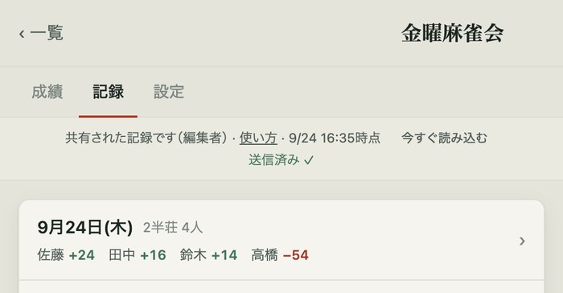
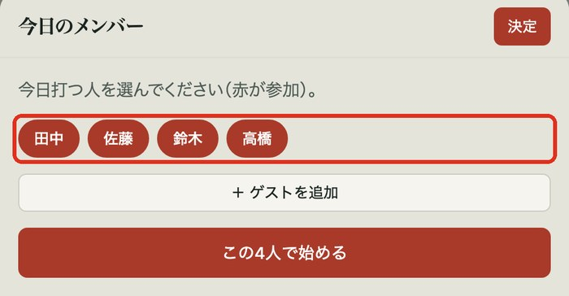
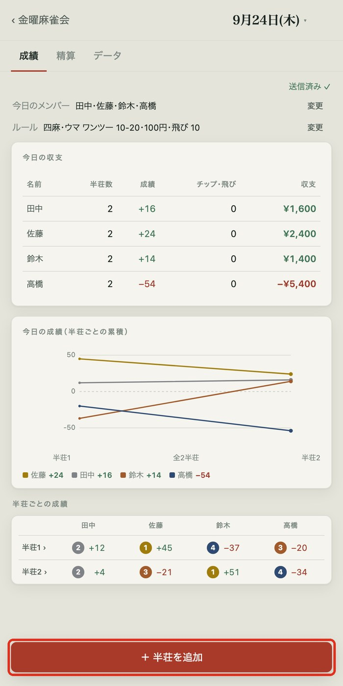
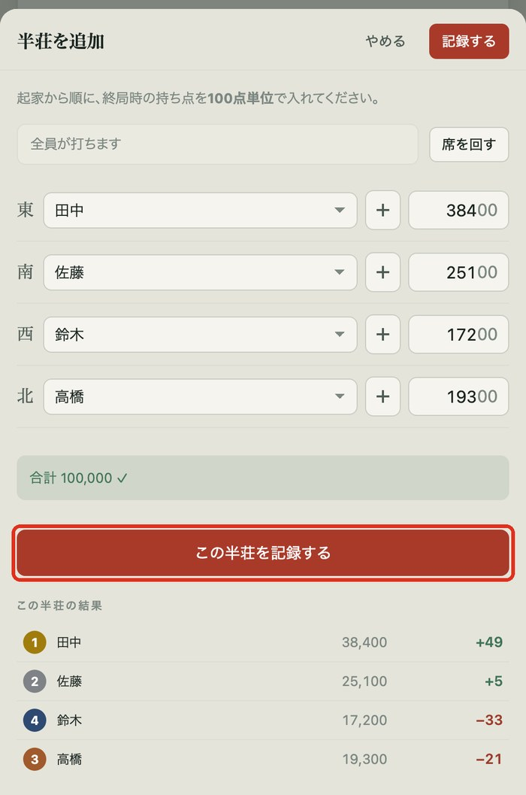
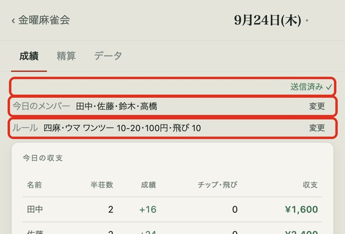
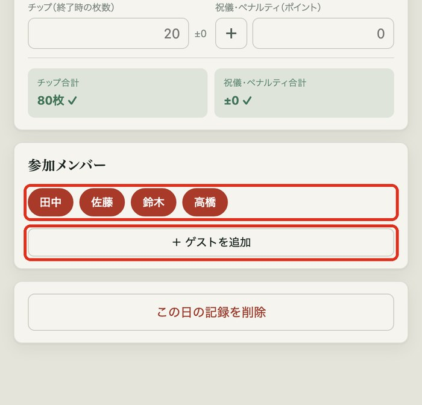
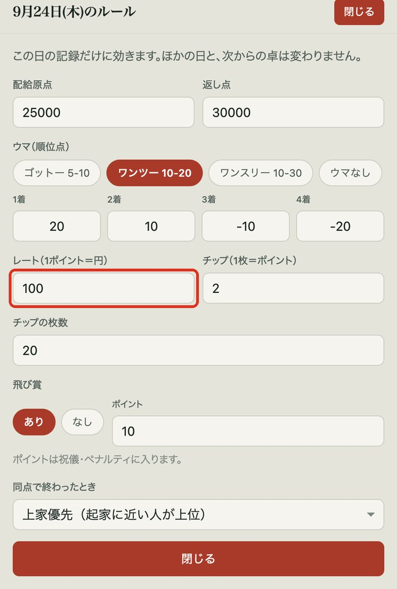

MAHJONG SCORE · USER GUIDE
麻雀成績
使い方ガイド
まずは自分の成績を。
点数を入れるときは、後半を開いてください。
01自分の成績を見る
カードから自分の成績へ。打った日の結果も振り返れます。
02点数を入れる
メンバーを選び、持ち点を入れます。精算や修正もここで確認。

麻雀成績 · 仲間向けガイド01 / 08
まずは自分の成績を。
点数を入れるときは、後半を開いてください。
カードから自分の成績へ。打った日の結果も振り返れます。
メンバーを選び、持ち点を入れます。精算や修正もここで確認。
幹事から届いたリンクを開けば使えます。インストールは不要です。
「成績」 収支、半荘ごとの累積グラフ・着順・ポイント
「精算」 チップ、祝儀・ペナルティ
「データ」 一人ずつの内訳、その日のルール


見るだけの人の画面は、開いている間、約1分ごとに新しい記録を読み込みます。すぐに見るときは「今すぐ読み込む」を押します。ほかのアプリから戻ったときも自動で読み込みます。

記録が表示された画面を開いたまま、ホーム画面に追加します。
LINEの中で開いた場合
メニューの「ブラウザで開く」を押します。
iPhone（Safari）
共有ボタン（□に↑）→「ホーム画面に追加」→「追加」
Android（Chrome）
右上の「⋮」→「ホーム画面に追加」
アイコンから記録が出ない場合は、アイコンを消し、届いたリンクを開き直してから追加し直します。
コミュニティ名の横に「編集者」と出る人向けです。
「今日の記録があります」と出た場合、同じ卓なら「今日の卓を続ける」、同じ日に別の卓なら「別の卓として始める」を押します。日付は、その日の画面の上にある日付を押すと変えられます。

ゲストはその日だけの参加で、通算成績には入りません。5人以上を選ぶと、入力画面に「抜け番」が表示されます。



合わないときは「合計が 100,000 になりません」と赤く出ます。点数を見直してください。着順・ウマ・オカ・五捨六入は自動で計算します。

飛び賞ありのルールで持ち点がマイナスの人がいると、「飛ばした人」の欄が出ます。
通常の飛び賞は自動で移ります。0点ちょうどは飛びになりません。

その日の画面の右上を見ます。
「送信済み ✓」 みんなに届いています。
赤い「未送信」 まだ届いていません。電波のある所で「今すぐ送る」を押します。
電波がない所で入れた記録もスマホに残ります。次にアプリを開いたときも自動で送ります。

消す場合は、入力画面の一番下の「この半荘を削除」を押します。9秒以内なら画面下の「取り消す」で戻せます。
持ち枚数との差は自動計算します。「チップ合計」「祝儀・ペナルティ合計」が緑の「✓」なら数が合っています。飛び賞は自動で入り、名前の下に「飛び賞 +10（自動）」のように出ます。

「精算」の一番下の「参加メンバー」からも変えられます。すでに打った人は外せません。

変更はその日だけです。人数は変えられません。いつものルールはコミュニティの「設定」で変え、次の卓から適用されます。

まずは、画面に出ている表示に近いものを探してください。
| こんなとき | 試すこと |
|---|---|
| 「未送信」と出たまま | 電波のある所で「今すぐ送る」を押します。次にアプリを開いたときも自動で送ります。 |
| 入れた記録がほかの人に見えない | 入れた人の画面が「送信済み ✓」か確認します。見る人は「今すぐ読み込む」を押すか、アプリを開き直します。 |
| 同じ半荘が2つある | 片方の半荘を開き、「修正」から「この半荘を削除」を押します。同じ半荘を2人が入力すると2件になります。 |
| 「通信できませんでした」と出た | 電波のある所で、届いたリンクかアイコンから開き直します。入れた記録はスマホに残っています。 |
| 「共有された記録を読み込めませんでした」と出た | リンクが古いか、共有が止められている可能性があります。幹事にリンクを送り直してもらってください。 |
| アイコンから開くと記録が出ない | アイコンを消します。届いたリンクを開き直し、記録が出た画面から追加し直します。 |
| マイナスの点数が入らない | 数字の左の「＋」を押して「−」にします。 |
| 席を間違えた | 記録前なら席を選び直します。記録後なら半荘を開いて「修正」を押します。 |
アプリのトップ画面と、共有された記録の画面上部にも「使い方ガイド」「使い方」のリンクがあります。